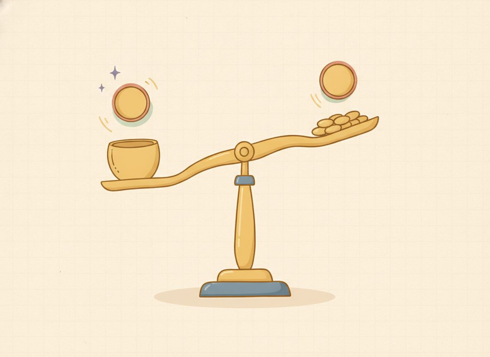

Inverse operations & one-step equations
Every equation you'll ever solve is built from one move, repeated. Once you can solve a one-step equation, the longer ones ahead are just a few of these single moves in a row. So this is the piece worth getting solid.
Here's the idea, in something you can picture. Imagine a covered cup on a balance scale, sitting next to 5 coins, and the whole thing balancing 12 coins on the other pan. You want to know how much the cup weighs.

If you lift 5 coins off the left pan, the scale tips. To keep it level, you also lift 5 coins off the right. Do both, and it stays balanced: now the cup alone balances 7 coins. The cup weighs 7.
That's the same thing this equation says: $$x+5=12$$ The x is the cup. The +5 is sitting right next to it, and you want x by itself, alone on one side with a number on the other. (Getting x alone like this has a name: you're isolating the variable.)
To peel the +5 away, do the opposite of adding 5: subtract 5. That's the inverse operation, the move that undoes another. Adding and subtracting undo each other, and multiplying and dividing undo each other. And to keep the scale level, subtract 5 from the other side too: $$x+5=12 \;\xrightarrow{\,-5\text{ both sides}\,}\; x=7$$ When you subtract 5 from x + 5, the +5 goes to zero, and x is left standing alone. Notice what didn't happen: nothing got cancelled by magic. The +5 went to zero because you subtracted exactly 5.
One move left, and it's the one to build into a habit now: check it. Put your answer back into the original equation and see if both sides match. Here x = 7, so the left side is 7 + 5 = 12, which matches the right. So x = 7 is the solution, the value that makes the equation a true statement.
That check is your safety net for the whole book. If the two sides ever don't match, you haven't failed. Your check just did its job and caught something before it counted. That's exactly what it's for. Go back to your first step and re-run the arithmetic slowly. A mismatch is almost always one sign or one small slip, not the whole method.
The same move handles every one-step equation; only the operation you undo changes. If x has something subtracted, add it back. If x is multiplied, divide. If x is divided, multiply. The picture stays the balance scale: whatever you do, do it to both pans.
New words
- 2.1.d1 Solution: a value that makes the equation a true statement when you substitute it in. (That's exactly why we check by substituting. We're confirming the statement is true.)
- 2.1.d2 Isolate the variable: get x alone on one side, with a number on the other.
- 2.1.d3 Inverse (opposite) operation: the operation that undoes another. Addition ↔ subtraction; multiplication ↔ division.
Read each worked example slowly, a line at a time, and ask why each line follows from the one above before you go on. The whole pattern is in these four. Each one isolates x with the inverse operation, then checks by substituting the answer back.
Worked example
2.1.w1 Addition, undo by subtracting: $$\begin{aligned} &x+5=12 \\ &\xrightarrow{\,-5\,}\; x=7 \\ &\text{Check: } 7+5=12 \end{aligned}$$
2.1.w2 Subtraction, undo by adding: $$\begin{aligned} &x-4=10 \\ &\xrightarrow{\,+4\,}\; x=14 \\ &\text{Check: } 14-4=10 \end{aligned}$$
2.1.w3 Multiplication, undo by dividing: $$\begin{aligned} &4x=20 \\ &\xrightarrow{\,\div 4\,}\; x=5 \\ &\text{Check: } 4(5)=20 \end{aligned}$$
2.1.w4 Division, undo by multiplying: $$\begin{aligned} &\frac{x}{2}=6 \\ &\xrightarrow{\,\times 2\,}\; x=12 \\ &\text{Check: } \frac{12}{2}=6 \end{aligned}$$
In the multiplication one, dividing both sides by 4 makes the 4 in front go to one, since 4/4 is 1 and 1x is just x. That's the same "goes to one" idea you'll use any time a number is multiplying the variable.
2.1.w5 Here's a clean case to get the method moving before the practice mixes things up: $$\begin{aligned} &x+7=7 \\ &\xrightarrow{\,-7\,}\; x=0 \\ &\text{Check: } 0+7=7 \end{aligned}$$ There's nothing wrong with x = 0. Zero is a perfectly good number, and it's the value that keeps this balance level. It also catches the most common way of misreading the equals sign.
It's tempting to treat = as a button that means write the running total here, the way it works on a calculator. But it means the two sides weigh the same. The left pan is x + 7 and the right pan is 7, so x has to be 0 for them to match.
One reading habit worth building: a letter stands for "some number we don't know yet," so read 5y as "five of whatever the box holds," never as the digits 5 and y stuck side by side.
Check yourself
- 2.1.c1 Solve x − 5 = 12, and prove it's right by substituting back. (The 5 is subtracted, so add 5 to both sides: x = 17. Check: 17 − 5 = 12, which matches.)
- 2.1.c2 In 6x = 6, what's the inverse operation, and why does the 6 in front go to one? (Divide both sides by 6; 6/6 = 1, so the left side becomes 1x, which is x. That gives x = 1, and 6(1) = 6 checks.)
- 2.1.c3 If you change x + 9 = 14 to 9 + x = 14, does anything about your method change? (No. Addition order doesn't matter, so you still subtract 9 from both sides and get x = 5.)
You can now solve any one-step equation by undoing the operation on x and doing it to both sides, then checking your answer by putting it back in.
A set that mixes the four types feels harder than drilling one kind, and that's the point. It's what makes a skill last to next week. Every problem below has its answer at the end of the lesson, and if one stalls you, look back at the matching worked example. That's what it's there for.
Add (undo by subtracting):
Reveal answerHide to problem 1
7Reveal answerHide to problem 2
5Reveal answerHide to problem 3
0Reveal answerHide to problem 4
9Reveal answerHide to problem 5
5Subtract (undo by adding):
Reveal answerHide to problem 6
14Reveal answerHide to problem 7
7Reveal answerHide to problem 8
11Reveal answerHide to problem 9
8Reveal answerHide to problem 10
17Multiply (undo by dividing):
Reveal answerHide to problem 11
5Reveal answerHide to problem 12
7Reveal answerHide to problem 13
1Reveal answerHide to problem 14
9Reveal answerHide to problem 15
4Divide (undo by multiplying):
Reveal answerHide to problem 16
12Reveal answerHide to problem 17
12Reveal answerHide to problem 18
10Reveal answerHide to problem 19
32Reveal answerHide to problem 20
18Mixed (pick the right inverse):